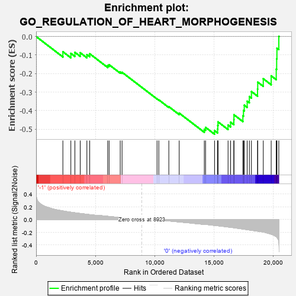
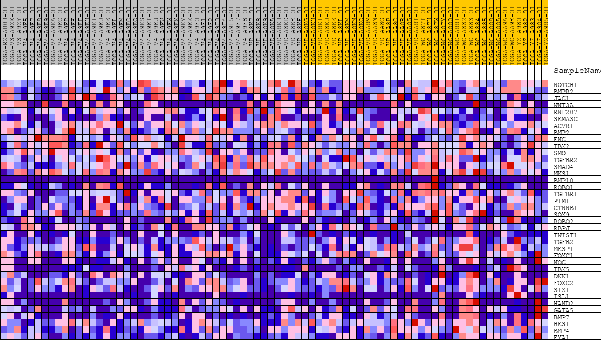
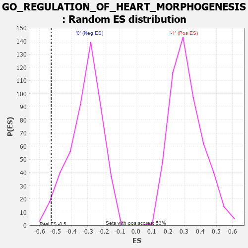

| | | Dataset | GSEAExpression.phenotype_uvm.cls#-1_versus_0 |
| Phenotype | phenotype_uvm.cls#-1_versus_0 |
| Upregulated in class | 0 |
| GeneSet | GO_REGULATION_OF_HEART_MORPHOGENESIS |
| Enrichment Score (ES) | -0.52684325 |
| Normalized Enrichment Score (NES) | -1.6759044 |
| Nominal p-value | 0.029535865 |
| FDR q-value | 1.0 |
| FWER p-Value | 0.982 |
Table: GSEA Results Summary

Fig 1: Enrichment plot: GO_REGULATION_OF_HEART_MORPHOGENESIS
Profile of the Running ES Score & Positions of GeneSet Members on the Rank Ordered List
| PROBE | DESCRIPTION
(from dataset) | GENE SYMBOL | GENE_TITLE | RANK IN GENE LIST | RANK METRIC SCORE | RUNNING ES | CORE ENRICHMENT | | 1 | NOTCH1 | na | | | 2260 | 0.135 | -0.0821 | No |
| 2 | BMPR2 | na | | | 2933 | 0.115 | -0.0908 | No |
| 3 | JAG1 | na | | | 3275 | 0.106 | -0.0853 | No |
| 4 | WNT3A | na | | | 3725 | 0.095 | -0.0874 | No |
| 5 | RNF207 | na | | | 4287 | 0.082 | -0.0976 | No |
| 6 | SEMA3C | na | | | 4526 | 0.077 | -0.0930 | No |
| 7 | ACVR1 | na | | | 6045 | 0.051 | -0.1565 | No |
| 8 | BMP2 | na | | | 6164 | 0.049 | -0.1521 | No |
| 9 | ENG | na | | | 7101 | 0.032 | -0.1913 | No |
| 10 | TBX2 | na | | | 7257 | 0.029 | -0.1928 | No |
| 11 | SMO | na | | | 10210 | -0.005 | -0.3360 | No |
| 12 | TGFBR2 | na | | | 10359 | -0.007 | -0.3416 | No |
| 13 | SMAD4 | na | | | 11206 | -0.022 | -0.3783 | No |
| 14 | MKS1 | na | | | 12082 | -0.038 | -0.4131 | No |
| 15 | BMP10 | na | | | 14202 | -0.076 | -0.5008 | No |
| 16 | ROBO1 | na | | | 14307 | -0.076 | -0.4899 | No |
| 17 | TGFBR1 | na | | | 15065 | -0.093 | -0.5075 | Yes |
| 18 | PIM1 | na | | | 15323 | -0.098 | -0.4996 | Yes |
| 19 | CTNNB1 | na | | | 15340 | -0.098 | -0.4799 | Yes |
| 20 | SOX9 | na | | | 15357 | -0.098 | -0.4602 | Yes |
| 21 | ROBO2 | na | | | 16207 | -0.117 | -0.4771 | Yes |
| 22 | RBPJ | na | | | 16422 | -0.123 | -0.4620 | Yes |
| 23 | TWIST1 | na | | | 16696 | -0.129 | -0.4485 | Yes |
| 24 | TGFB2 | na | | | 16705 | -0.129 | -0.4220 | Yes |
| 25 | MESP1 | na | | | 17459 | -0.149 | -0.4277 | Yes |
| 26 | FOXC1 | na | | | 17509 | -0.150 | -0.3987 | Yes |
| 27 | NOG | na | | | 17575 | -0.152 | -0.3701 | Yes |
| 28 | TBX5 | na | | | 17823 | -0.159 | -0.3490 | Yes |
| 29 | DKK1 | na | | | 18006 | -0.164 | -0.3235 | Yes |
| 30 | FOXC2 | na | | | 18181 | -0.169 | -0.2966 | Yes |
| 31 | SIX1 | na | | | 18697 | -0.183 | -0.2836 | Yes |
| 32 | ISL1 | na | | | 18712 | -0.183 | -0.2460 | Yes |
| 33 | HAND2 | na | | | 19180 | -0.197 | -0.2277 | Yes |
| 34 | GATA5 | na | | | 19848 | -0.231 | -0.2120 | Yes |
| 35 | BMP7 | na | | | 20275 | -0.270 | -0.1764 | Yes |
| 36 | HES1 | na | | | 20311 | -0.276 | -0.1205 | Yes |
| 37 | BMP4 | na | | | 20333 | -0.282 | -0.0626 | Yes |
| 38 | EYA1 | na | | | 20493 | -0.343 | 0.0012 | Yes |
Table: GSEA details [plain text format]

Fig 2: GO_REGULATION_OF_HEART_MORPHOGENESIS
Blue-Pink O' Gram in the Space of the Analyzed GeneSet

Fig 3: GO_REGULATION_OF_HEART_MORPHOGENESIS: Random ES distribution
Gene set null distribution of ES for GO_REGULATION_OF_HEART_MORPHOGENESIS